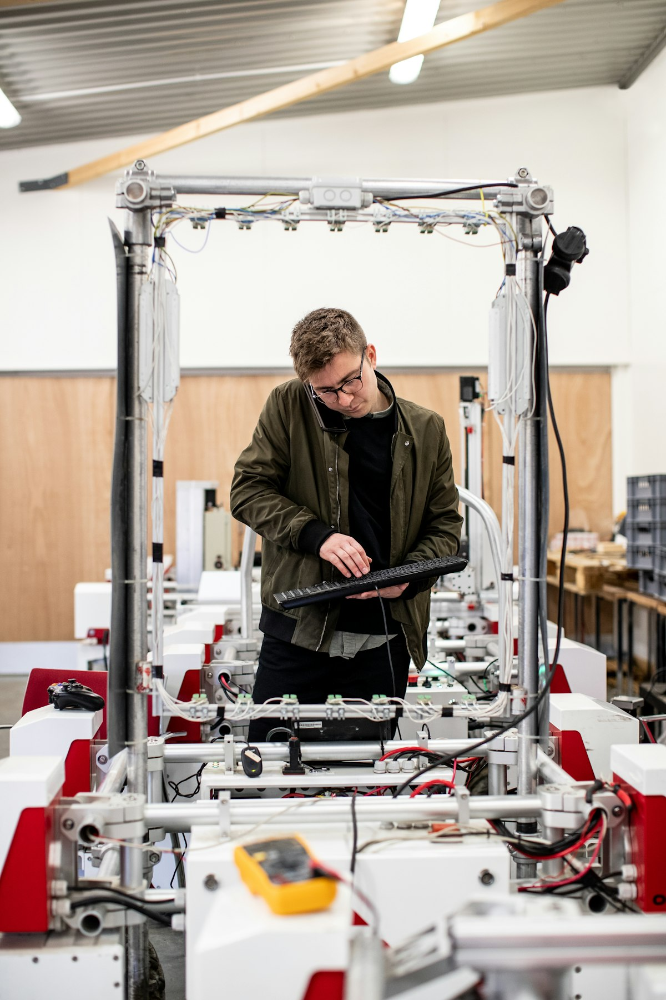
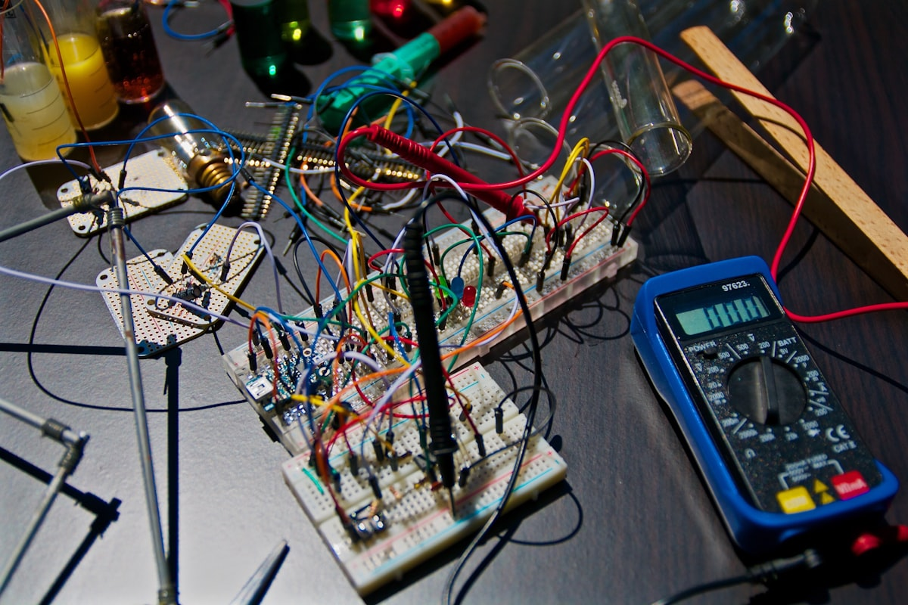

A better way to fix what keeps home running.
Home appliances shouldn't cause dread when they break down. We replaced vague arrival windows and surprise invoices with clear diagnostics and accountable service.
Every Fixora technician is background-checked, certified on major appliance brands, and equipped with precision testing tools to isolate problems quickly.
How we deliver dependable repair.
Three core commitments shape every service visit, estimate, and customer interaction.
Diagnostic Evidence
We test electrical circuits, components, and sensors systematically before quoting repairs.
Itemized Honesty
Every estimate cleanly separates diagnostic inspection, approved labor, and genuine OEM parts.
Respect for Your Home
We protect your floors, keep workspaces clean, and verify complete operation before leaving.
Trained technicians, verified quality.
Our team brings decades of combined refrigeration, laundry, and kitchen appliance experience directly to your door.

Brand Certification
Specialists undergo continuous factory training on Samsung, LG, Whirlpool, Bosch, GE, and Sub-Zero.
Digital Service Logs
Diagnostic readings and component serial numbers are archived into your customer dashboard.
90-Day Parts & Labor Warranty
We stand behind every repair. If an issue recurs within 90 days, we return promptly at zero extra cost.
Background-Checked & Insured
Every technician passes rigorous background screening, drug testing, and carries full liability coverage.
Schedule your repair with Fixora.
Certified local technicians available today. Book online in under two minutes.